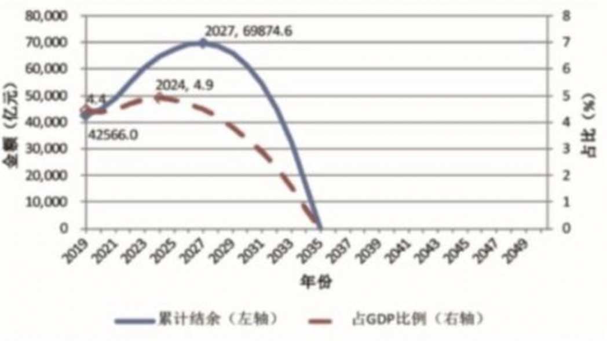

报告称养老金结余将在2035年耗尽
2019年4月，中国社科院世界社保研究中心发布《中国养老金精算报告2019～2050》，其中提到“2019年全国城镇企业职工基本养老保险基金累计结余为4.26万亿元，此后持续增长，到2027年达到峰值6.99万亿元，然后开始迅速下降，到2035年耗尽累计结余。”
核心观点，有2个：
1）未来30年，赡养率翻倍，从2:1变为1:1。即2019年，每两个缴纳社保的劳动力赡养一个退休老人，而到了2050年，每一个缴纳社保的劳动力赡养一个退休老人。通俗地说，就是交钱的人少了，领钱的人多了。
2）养老金累计结余在2027年达到峰值，并在2035年耗尽。这在网上一度被解读为2035年开始，80后将无养老金可领。
图1：2019～2050年全国企业职工基本养老保险基金累计结余预测，《中国养老金精算报告2019～2050》
第一个问题，跟人口生育率有关系，现在虽然放开了二胎，但生育率仍然偏低。据2017年人口调查数据，中国大陆生育率仅1.59，低于世代更替水平2.1，以及世界平均水平2.5。
联合国世界人口展望预测，中国在本世界末的人口数，低预测值不足7亿，中预测值为11亿以内，高预测值16亿。尽管如此，仍然有中国专家称这组数据被高估了。

图2：中国人口1950～2100预测，联合国世界人口展望
人口总量的下降只是一方面，更大的问题在于人口结构。联合国世界人口展望对中国60岁以上人口的走势同样给出预测，如下图：取中预测值，到2050年，60岁以上人口将达到4.1亿左右，而上图同期总人口中预测值为11亿，这意味着60岁以上人口占人口比例为37.27%。

图3：中国60岁以上人口1950～2100预测，联合国世界人口展望
这是什么概念呢？目前的日本是人口老龄化最为严重的国家，这个值为32.8%。
当前，根据国家统计局发布的最新人口数据显示，截止到2018年末，60岁以上人口为2.49亿，占总人口比例为17.9%。未来30年，60岁以上人口占比还要再提升一倍多！
新中国以来，共出现过三次人口生育高峰，分别是1949～1957，1962～1970，1981～1990。前两次，中间因为“三年自然灾害”而被迫中断了，那时候连饭都吃不上，更不要说生孩子了。这一代人，在他们成年之后，因为已经开始实施计划生育政策，但毕竟基数很大，所以80年代，仍然出现了一次生育高峰，也就是我们的80后。

图4：1949～2008，中国人口自然增长率及总人口趋势，wikipedia
到2050年，80后全部过了60岁，每三个中国人里面就有一个60岁以上的老人，整个社会的平均年龄竟达到了51岁，预期寿命将超过80岁。下面这个GIF图，信息量很大，可以反复多看看。
图5：1982～2050人口金字塔结构变化图
一个既好又不好的事实是，随着生活和医疗水平的提升，届时国人的预期寿命将超过80岁。80后们，即使自己到了64岁（延迟退休政策执行后）退休的年纪，很可能仍要赡养四老，为老人养老送终。
第二个问题，是养老金制度和运行的问题。
1997年，国务院颁布《关于建立统一的企业职工基本养老保险制度的决定》，也就是我们现行的养老金制度，即社会统筹和个人账户相结合的统账结合模式。
养老金制度，过去存在一些问题：
1）在1997年之前退休，以及1997年开始实行统账结合制度之后因为时间过短，导致的个人账户中余额不多的，这两类人，可以理解为是之前没有缴纳或缴纳不足，这是历史遗留的欠债，过去很长一段时间一直在补这个窟窿。
2）男性60岁退休，女性55岁退休的法定退休年龄始于1978年，当时中国人均预期寿命只有65.86岁。而在2017年，这个数字达到76岁。2050年，会超过80岁。延迟退休方案计划于2022年执行，80后可能的退休年龄大概在62-64岁之间。

图6：中国1978年预期寿命为65.857岁，世界银行
3）养老金的投资形式单一。在相当长的一段时间里，上万亿的养老基金主要是存银行或是购买债券，十多年来的平均收益率不到2%，扣除通胀因素，实际为负数。而美国，开始于1978年的401K计划，大约有60%的比例投资于股市，美国股市近几十年的回报率年化大约在8～10%。近几年，中国的养老基金开始效仿美国401K计划进入股市，目前入市资金规模大约为15%。
以上，我们看到了一些好的变化，但不争的事实是，30年后，如果真到了一个劳动力养活一个老年人的境地，那么80后的退休生活能美到哪里去呢？
另外，为了降低企业的负担，自2019年5月开始，正式实施社保降费，企业出缴比例，由20%降到16%。不禁让人捏一把汗。社保的钱本来就不够用啊，企业少出了，这部分钱又让谁来出呢？
网上有很多调侃“倒霉”的80后，其中一个是这样说的：
1980年——独苗
国家提倡一对夫妻只生育一个孩子，于是很多80后成了独苗！
1997年——大学
全部大学开始收费，年龄最大的80后17岁，开始步入大学校园！
1998年——房奴
全国房改。2004年房价大涨，年龄最大的80后24岁，步入结婚买房的年龄段，成了第一代的房奴！
2015年——二孩
中国实行全面二孩，80后25岁至35岁，成为生育主力军！
2016年——延退
延迟退休时间表正式公布，按初步测算，80后们又赶上了！
养老金出现短缺怎么办？
我们上面提到了养老金本身运作上可能的一些变化，比如延退，比如养老金入市。
如果这还不够，那么除此以外，政府还能做些什么呢？
国家在经济领域的一些操作，有点偏宏观，可能不太好理解。我把它比作一个家庭，来解释一下。如果一个家庭，突然增加了开支，钱不够用的时候，有什么办法来改善资金短缺的困境？大概不外乎：提高收入、重新分配支出占比、借债。
1）提高收入。政府的主要收入来源是税收，提高政府收入就是多征税。我们多数人平时接触最多的就是个人所得税，一般会直接在工资中扣除。根据中央政府网站的数据显示，2018年，全国税收收入是15.64万亿元，而全国的GDP是90.03万亿，税收/GDP的值大概在17.37%。

图7：世界各国税与GDP的比值，网络
图7是网上找到的一张各国税收与GDP比值分布地图，其中中国的数据跟刚才上面算出来的有差距，猜测可能是广义收入（除税外还有土地出让、国有资产收益等）与GDP的比值。但各国的比例可能大体上可以参考一下。
不知道你觉得现在的税收重不重？看起来，继续提高税收还有一定空间，但也不是太大。不过那些颜色最红的地区，主要是北欧的所谓高福利国家，高福利也是要付出代价的。
2）重新分配支比占比，这个在政府层面就是财政手段。政府每年的财政支出，涉及到社会发展的方方面面，比如教育、医疗、基建、国防及社会福利等等。
事实上财政正是养老保险制度稳定运行的最后保障。自2014年开始，职工基本养老保险基金支出开始大于征缴收入，当期缺口1321亿元，由财政补足。2017年，缺口扩大，各级财政补贴8004亿。根据2019年全国两会上关于2019年中央和地方预算草案，2019年，全国财政补贴社保基金19468亿，这将占到财政支出总预算的8.81%。
下图是根据当前的养老保险基金实际收缴数据，与财政补贴数据比例预测的未来趋势，可以看到，即使是财政一直加大补贴力度，当前的结余仍将会被耗尽。
图8：按目前的实际收缴支出增长情况预测，网络
3）借债。政府也可以借债，就是我们熟知的中央政府发行的国债，以及地方政府发行的地方债，统称政府债务。政府借债，其实是透支子孙后代的钱来用，就目前的情况来看，世界各国的债务问题都比较严重。
图9：世界各国债务占GDP的比例，中国为55.4%，国际货币基金组织
2009年，希腊债务与GDP比例超过113%，导致欧洲债务危机。根据国际货币基金组织公布的2019年数据，日本的债务是其GDP的237.5%，美国为106.7%，中国当前值为55.4%。主权国家比较合理的债务水平是债务占其GDP的60%～90%。
不过，全球的债务规模日趋庞大，仅仅是利息就是一笔不小的支出，吞噬掉GDP增长中相当的一部分。近几年，我们经常听到负利率这个词，各国国债收益是逐级下降，直至出现负值。政府只有不断地借新还旧，用更低利率的新钱，来置换之前高利率的旧债。
图10：世界主要经济体的10年期国债利率，彭博社
图10列出了世界主要经济体的10年期国债利率，美国2.05%，加拿大1.5%，英国0.83%，法国0.02%，日本-0.14%，德国-0.3%，瑞士-0.53%。
中国目前的债务水平相比较而言，还不是特别严重，利率水平也还有转圜的余地。
当然，除了以上三种办法，政府还有一种特殊的权力，那就是印钱。
2008年以来，美国政府启动QE，大规模放水，世界各国也都开动印钞机，中国推出了自己的4万亿计划。

图11：2007～2016，美元、欧元、日元、人民币M2增长，网络
钱印多了，最直接的表现，就是物价不断上涨。我们可以从日常生活中观察，10几年前，武汉的一碗热干面，大概只要2元钱，而现在，普遍的价格是5元钱。
80后养老恐不乐观
网上有一组图片，是不同时期报纸上的标语：
1985年：只生一个好，政府来养老
1995年：只生一个好，政府帮养老
2005年：养老不能靠政府！
2012年：推迟退休好，自己来养老

图12：网友恶搞图，网络
尽管是网友恶搞的，也反应出了年轻一代对于养老问题的关注和担忧。
想象一下：作为80后独生子女的你，64岁退休，背负房贷，上有四老，下有二孩，也许那个时候，退休金只有1万元，而一碗热干面可能已经要20元了……